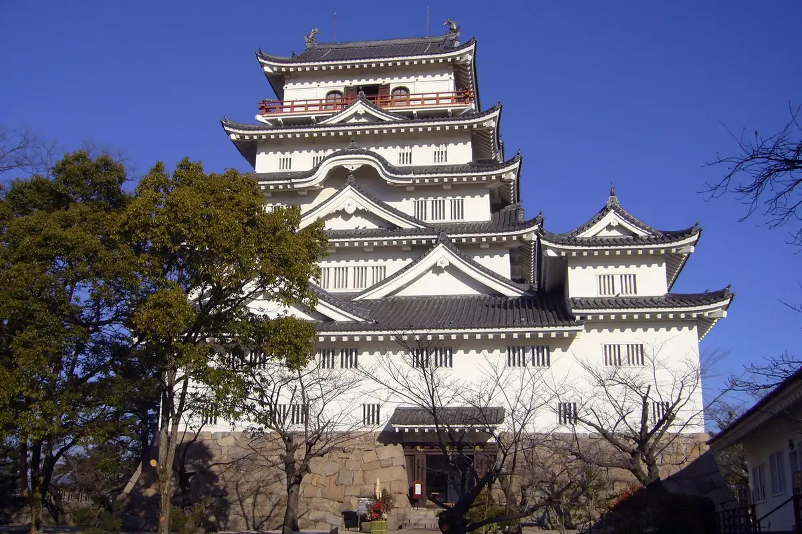
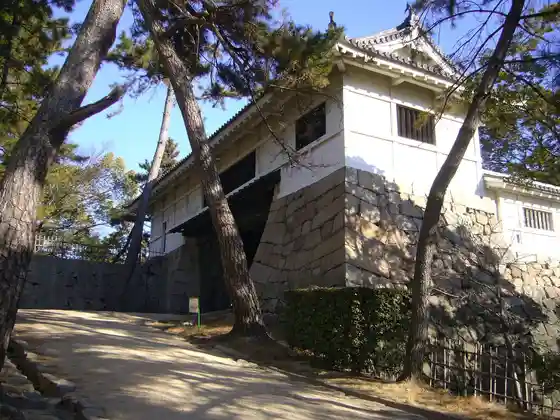
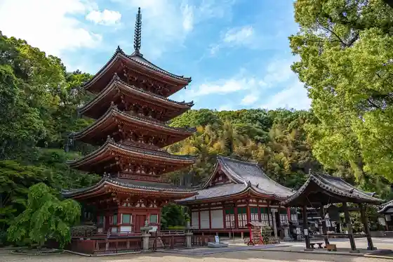
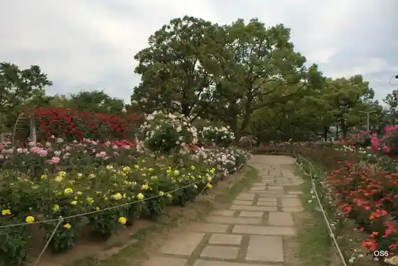

Fukuyama
Fukuyama · Hiroshima
Fukuyama
Highlighted on the Hiroshima map.

Stay
Ritchimondo Hotel Fukuyama Ekimae
Daiwaroinetto Hotel Fukuyama Ekimae
Fukuyama Nyukyassuru Hotel
San Hotel Fukuyama
CANDEO HOTELS (Kandeo Hotel Zu) Fukuyama
Fukuyama Orientaru Hotel
Hotel 1-2-3 Fukuyama
Besseruin Fukuyama Eki Kitaguchi (Fukuyama Shiro Mae Fukuyama 2 Go Mise)
Hotel Torendo Fukuyama Ekimae
Besseru Hotel Fukuyama (Kokudo 2 Gosen Fukuyama 1 Go Mise)
ANCHOR HOTEL FUKUYAMA (Anka Hotel Fukuyama)
Fukuyama Taminaru Hotel
Hotel Eriawan Fukuyama (Hotel Eriawangurupu)
Fukuyama Plaza Hotel
Hotel Ribumakkusu Fukuyama Ekimae
Toyoko INN Fukuyama Eki Shinkansen Minamiguchi
Dining
Jun Iori A Cha Ra
Koshitsu Izakaya Oyogi Ika × Motsu Nabe Kyushu Ryori Benkei Fukuyama Ekimae Mise
Yakiniku Toshichan
Ume no Hana Fukuyama Mise
Ya Dai Zushi Fukuyama Machi 2 Go Mise
Akaka Ra Fukuyama Minami Zao Mise
Kuroge Wagyu Baru 529 Miitobokkusu Fukuyama Miya Tori Main Shop
Koshitsu Shikoku Kyodo Kasseika Wara Ie 88 Fukuyama Mise
Shabu Kichi
Nikuryori Zushio
Kuimo no Ya Wan Fukuyama Mise
Ro
Kuroge Wagyu Horumon Taishu Yakiniku Shinsuke
Koshitsu Kambi Taishu Tori Sakaba Toriichizu Hiroshima Fukuyama Mise
Hyonchanpurukogi Fukuyama Ekimae
Toride
Onsen
Hotel 1-2-3 Fukuyama Public Bath
Fukuyama Orientaru Hotel Public Bath
CANDEO HOTELS (Kandeo Hotel Zu) Fukuyama Public Bath
Tomo no Ura Onsen Hotel Kamome Kaze Tei Public Bath
Tomo no Ura Onsen Keisho Kan Sazanami Tei Public Bath
Tomo no Ura Onsen Migiwa Tei Tone Kin Oto Public Bath
Sights
Fukuyama Shiro

Tomo no Ura
Myo In

Bara Park

Fukuyama Eki